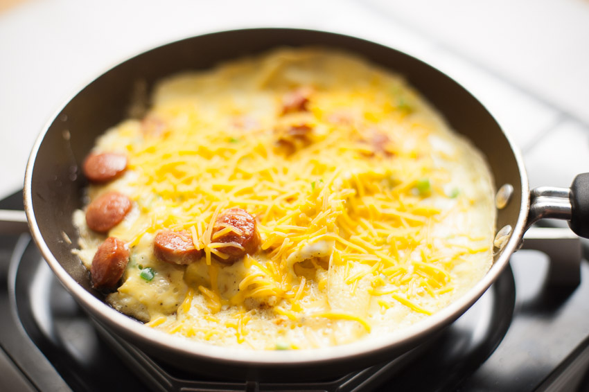

Hot Dog Omelette

Description
It is exactly as it sounds! Sliced hot dog mixed with egg to create an omelette.
This was comfort food growing up as a kid, when you couldn't decide what you wanted to pair with rice, hot dog or egg.
Ingredients
Steps
- Chop hot dog into small pieces.
- Mix egg in a bowl & pour into pan.
- Add chopped hot dogs into pan with egg.
- Wait until it can be flipped over, just like you would a pan cake. Or if you prefer, you can create more of scrambled egg dish and mix it in the pan.